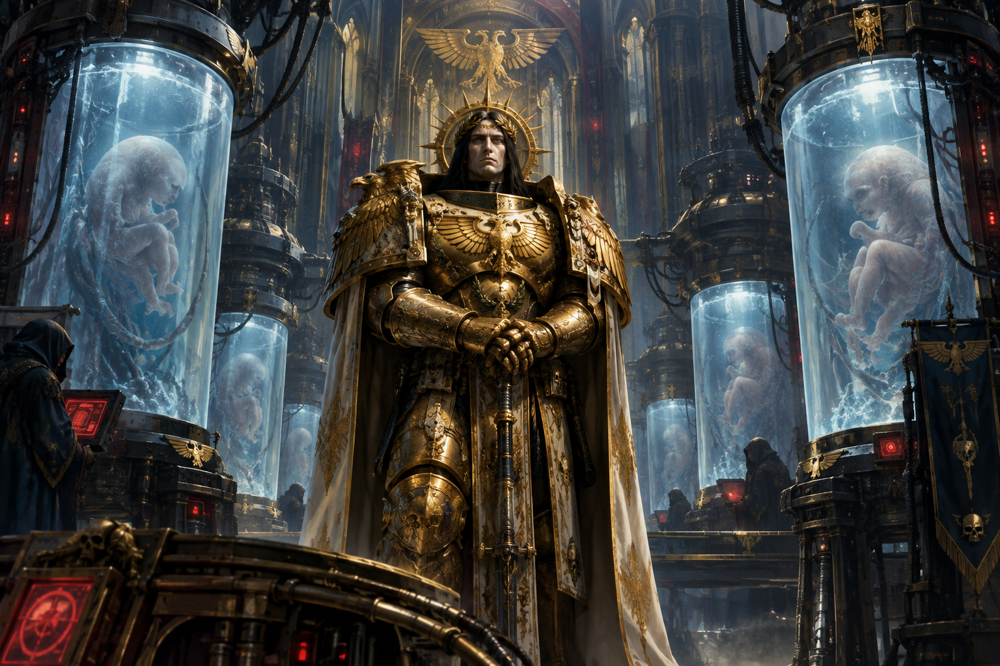
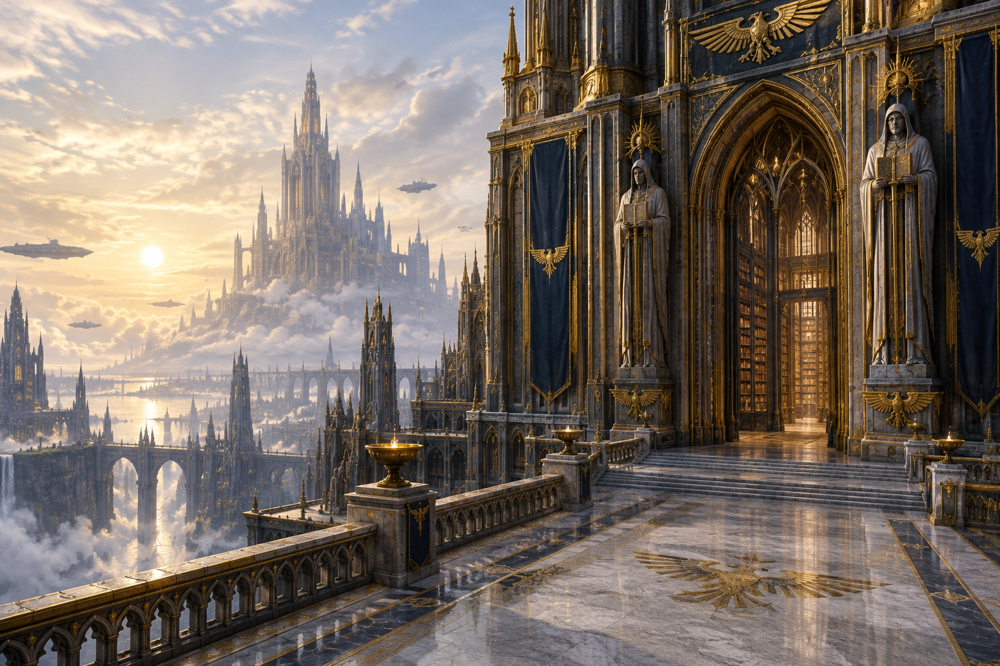
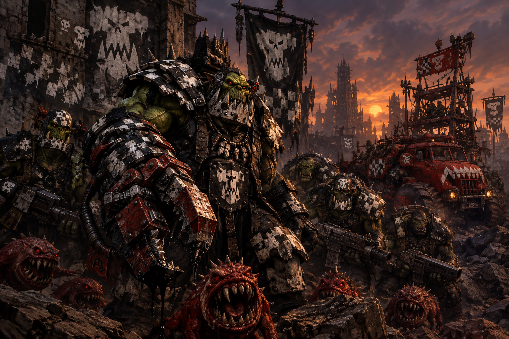
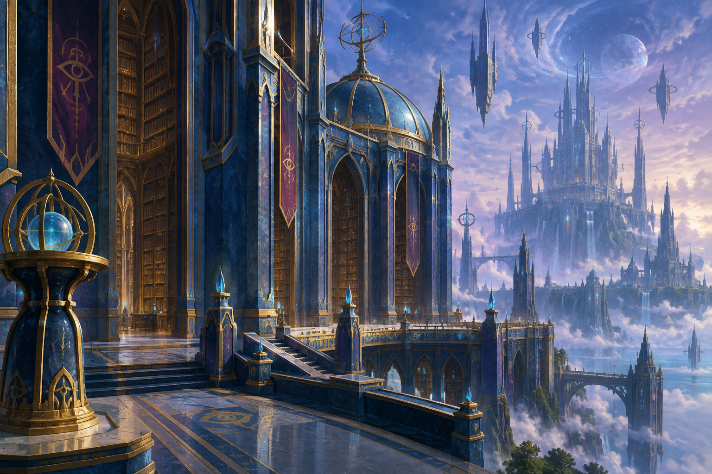
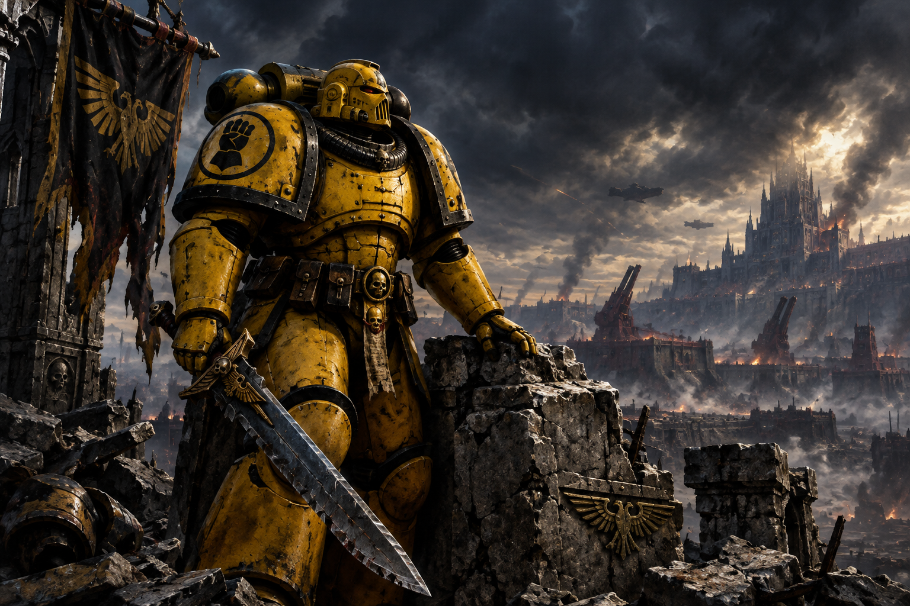
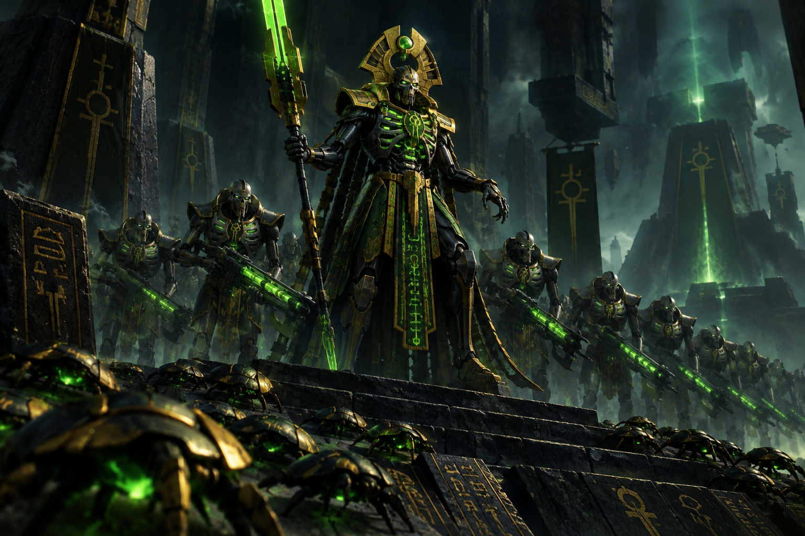
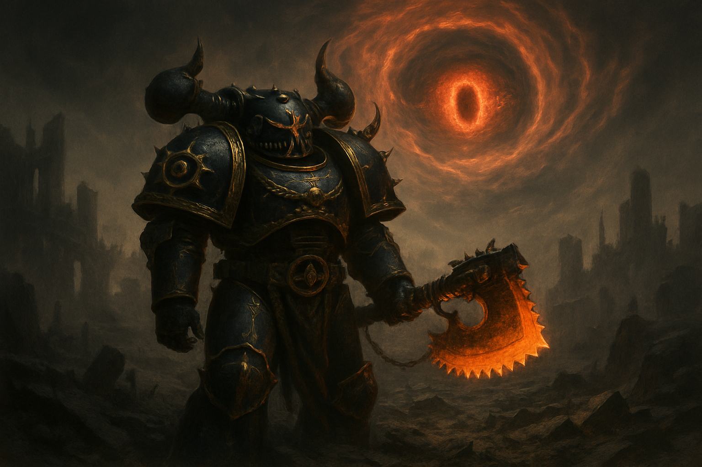
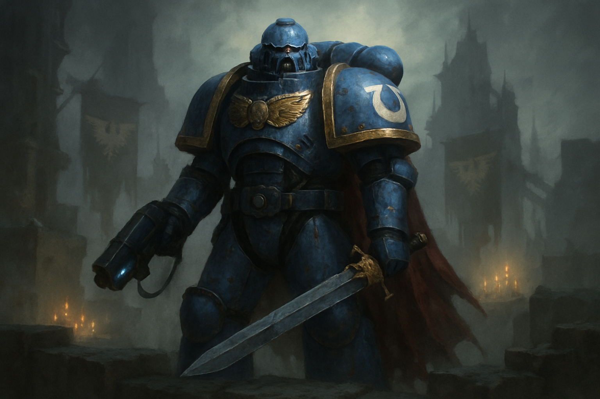
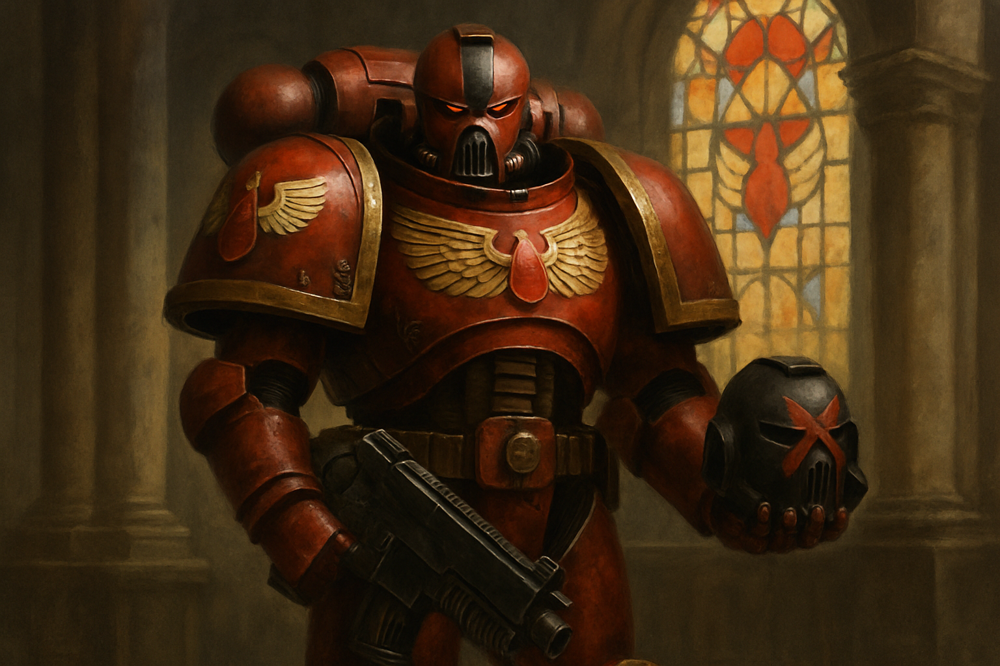
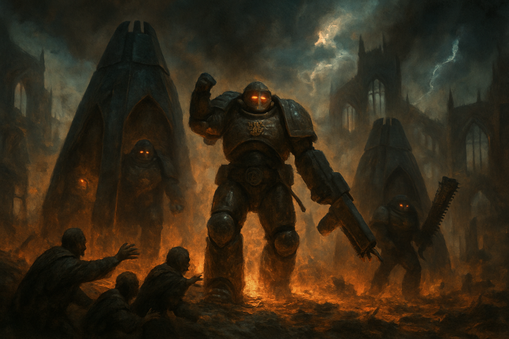

THE 40K CHRONICLES
An expanding, beginner-friendly path through the immense Warhammer 40,000 setting. Chapters are original commentary, not book reproductions.

Chapter 012 — The Primarch Project
Explore the monumental undertaking known as the Primarch Project: the Emperor’s clandestine experiment to forge heroes, demigods, and tragic legends at the heart of Warhammer 40,000’s most enduring mythos.
READ THE STORY ↗Chapter 011 — The Great Crusade
The Great Crusade marks a turning point in Warhammer 40,000 history, where the Emperor’s armies set forth to unify a fractured humanity. This guide explores its origins, the might of the Imperium, the Primarchs, and the Crusade’s momentous legacy.
READ THE STORY ↗
Chapter 010 — The Emperor of Mankind
Across the scorched plains of Terra and through the labyrinthine vaults of the Imperial Palace, the Emperor of Mankind looms both as myth and mechanism—a force binding the fate of a trillion souls. This in-depth guide explores the paradoxes, triumphs, and lingering mysteries of the Emperor: conqueror, creator, prisoner, and god.
READ THE STORY ↗
Chapter 009 — The Orks
From the roaring thunder of a Waaagh! to the odd fusion of violence, ingenuity, and humor, the Orks have rampaged across Warhammer 40,000 for decades. This guide delves into their biology, society, culture, and impact on the galaxy, unearthing the paradoxes that make Orks at once terrifying and dangerously comical.
READ THE STORY ↗
Chapter 008 — The Thousand Sons
Once scholars and psykers of great renown, the Thousand Sons tread the glittering ruins of Prospero’s dream. Journey through their tragic saga, from loyalist mystics to the arcane warlords of the Warp.
READ THE STORY ↗
Chapter 007 — The Horus Heresy
From the burning halls of the Imperial Palace to the shattered loyalty of brother Space Marines, the Horus Heresy reshaped the Warhammer 40,000 universe. This deep dive guides you through the Heresy’s cruelties, alliances, mysteries, and aftermath—explained for loyal fans and new readers alike.
READ THE STORY ↗
Chapter 006 — The Necrons
From the nightmarish depths of ancient tomb worlds, the Necrons emerge—immortal, remorseless, and relentless in their march across the galaxy. This guide dissects their mysterious origins, fractured dynasties, and chilling ambitions in the Warhammer 40,000 universe.
READ THE STORY ↗
Chapter 005 — The Forces of Chaos
From the shifting madness of the Warp to the corrupted legions of traitor Space Marines, the Forces of Chaos represent Warhammer 40,000’s most insidious threat. Journey through their many faces, ambitions, and damning legacies in the grim darkness of the far future.
READ THE STORY ↗
Chapter 004 — The Imperium of Man
A deep-dive into the grim engine of humanity’s interstellar empire, chronicling its origins, structure, faith, and unending struggle to survive among a million hostile worlds.
READ THE STORY ↗
Chapter 003 — The Blood Angels
A definitive lore guide exploring the crimson legacy, tragic flaws, and battle-hardened brotherhood of the Emperor’s most artistic Space Marine sons: the Blood Angels.
READ THE STORY ↗
Chapter 002 — The Adeptus Astartes
With thunderous fury and centuries of myth, the Adeptus Astartes stand between humanity and extinction. This meticulously researched guide traces their origins, evolution, rituals, and enduring mysteries. Newcomers and veterans alike will discover the complexities and contradictions that make the Emperor's Angels of Death both immortal legends and deeply flawed protectors of a war-torn galaxy.
READ THE STORY ↗
Chapter 001 — The Wolves of Fenris
Fierce, fiercely loyal, and much more complicated than a legion of howling berserkers: meet the Space Wolves and their world.
READ THE STORY ↗